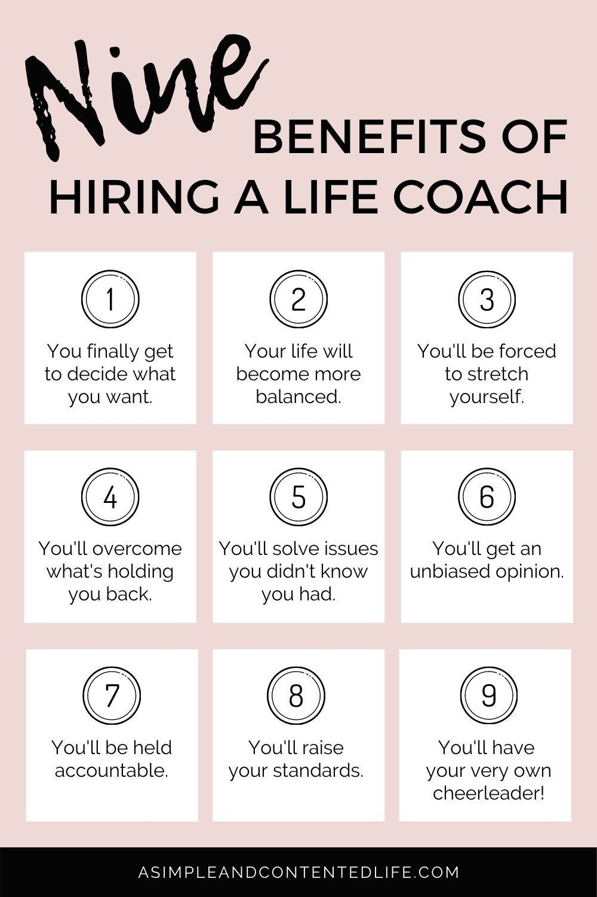

Compassionate Coaching for Lasting Change
Kathryn Newton, founder of Naturally Elevated, has dedicated her career to guiding others toward lasting transformation. Soon completing her Associate of Applied Science in Business, Kathryn skillfully merges practical strategies with spiritual and energetic practices. As a certified Reiki Master, she channels healing energy to foster emotional balance, stress relief, and well-being. Her passion for the Transformational Mind Movies technique helps clients envision their goals, instilling the confidence to manifest them. Kathryn's online sessions provide convenience, flexibility, and personalized care. She is committed to empowering clients and providing a safe space for growth, clarity, and positive change.
Empowering Lives Through Mind, Body & Spirit
Kathryn believes that everyone has the power to rewrite their life stories. Her journey toward self-discovery inspired her to help others achieve similar transformations. With profound empathy and genuine care, Kathryn creates supportive environments that foster emotional healing and resilience. Her coaching approach combines practicality, spirituality, and innovative visualization to inspire lasting change. Her academic and spiritual training ensures a balanced, comprehensive approach to personal coaching. Kathryn invites you to take the first step toward your new beginning today.
Your Guide to Empowerment
How Can Kathryn Can Help You?
- Holistic Approach: Empowers individuals through mind, body, and spirit integration.
- Inspired by Experience: Kathryn’s own journey fuels her passion for guiding personal transformations.
- Empathetic Coaching: Provides compassionate, supportive environments for emotional healing and resilience.
- Innovative Visualization: Blends practical tools with spiritual insights and visualization techniques for lasting change.
- Balanced Expertise: Combines academic training and spiritual practices for comprehensive personal coaching.